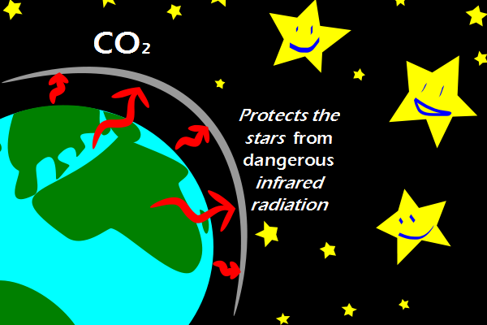

Comic JK 769
When I Feel Like It
⇤
<
?
>
⇥

⇤
<
?
>
⇥
Forum
.
RSS
.
Digg
.
Facebook
.
Reddit
.
Twitter
.
Stumbleupon
Enter your thoughts on number 769 here. Please, no spamming, trolling, phreaking, or asking your mother where energy comes from. I propose a new energy source - "Shut up". Judging by this comic, there will be enough to power all the world's homes and businesses. Silence is golden, shut up is gold. If only we could power things on bullshit... >My father in law does that on his farm. Hasn't paid a utility bill in decades. >> Yeah, I remember seeing a program on Discovery channel talking about this. It's a disgusting, yet quite practical way for those farms to be self-sustainable. I wonder how much power could be generated by humanshit. >>> In my city (about a million people) the sewage treatment plant meets about 60% its energy requirements this way. It used to be half that before Bono moved to town. I'm trying to think what this comic is meant to be based on. Around here people are all like "CO2 will kill all the trees!" not realizing that trees breathe in CO2 for most of their lives. Keeping Stars safe since 50x10^9 bc. >>that's a while >I think you mean 4.5x10^9 olol